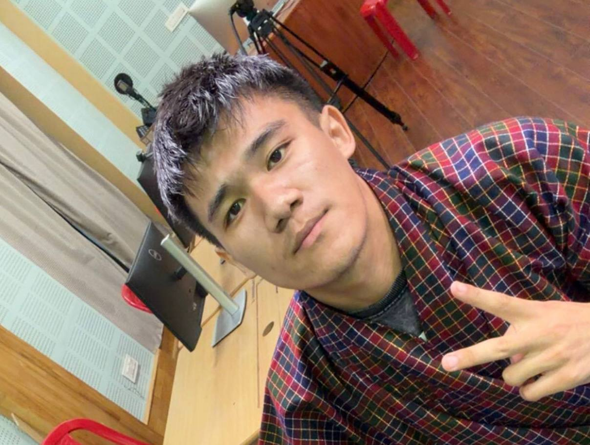
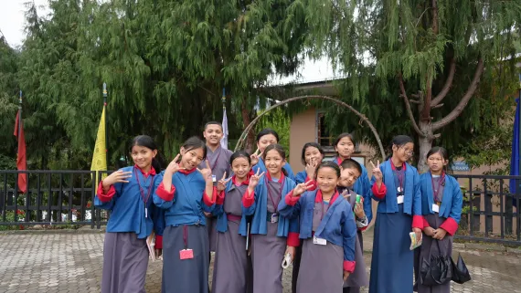

Tenzin Phuntsho
Enjoys solving problems and exploring how number systems work in daily life.
Meet the team behind Number System Made Easy, a digital learning resource designed to help Grade 9 DTI students understand number systems with confidence.
Number System Made Easy was developed as a CAP401 capstone digital artefact to make number-system concepts more approachable for Grade 9 learners. The portal brings explanations, worked examples, practice opportunities and an assessment together in one place.
Our shared goal is to make learning visual, engaging and accessible for students and teachers.

Learning, sharing and growing togetherFive contributors, one shared learning vision.

Enjoys solving problems and exploring how number systems work in daily life.
Interested in technology and finding engaging ways to make interactive content for learning.

Likes creating digital resources and presenting information in a clear and creative way.

Passionate about teaching and creating engaging activities for students.

Interested in web design and loves organising learning content to make learning simple and fun.
To make number systems easy to understand through clear explanations, interactive activities and engaging design.
To create a supportive learning platform that helps every Grade 9 student build confidence in mathematics and apply number systems in real life.
To work together as a team to design content, develop activities, create quizzes and build an interactive website that supports self-paced learning.
Curriculum connection
Designed for Grade 9 Digital Technology and Innovation, focusing on number systems and conversion skills.